Drop your phone and it falls. Every time, for everyone, forever. You would call that proof, but in the strict sense there isn't any, and no one can even tell you what gravity is.
Once you notice that gap, you see it everywhere: things we have measured to impossible precision, or built our whole world on top of, that we still cannot explain or prove. Here are eighteen of the most astonishing. Every image below is real. Every fact is sourced. The phenomenon is never in doubt. Only the explanation is missing.
The biggest, best-measured things, owed to causes we cannot see.
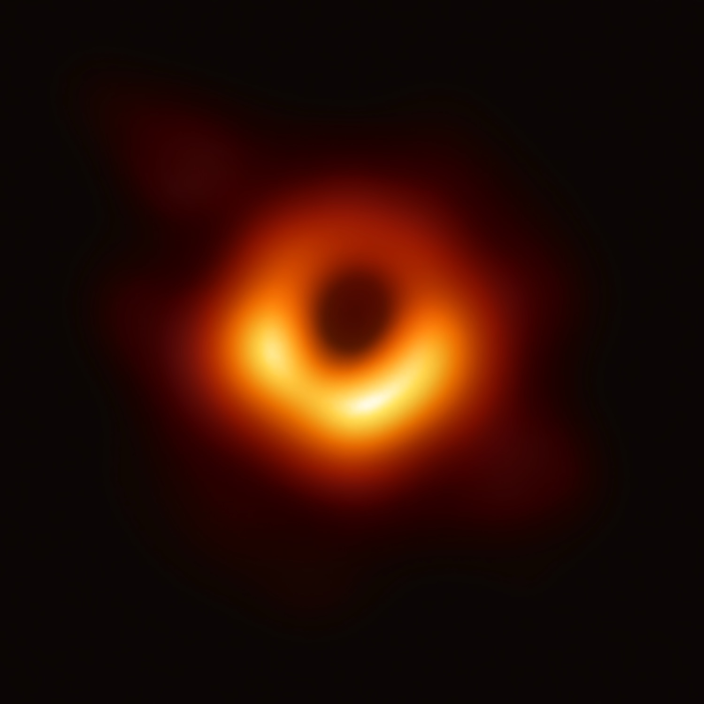
{kind=link}
No. 01 · Gravity
We photographed a black hole. We still can't say what gravity is.
This is a real photograph of a black hole, 55 million light-years away and bigger than our entire solar system. Its gravity bends passing light into that ring. Einstein's math predicted this exact shape a century before we could build the camera. Gravity is the best-tested idea in all of science, and nobody can tell you what it actually is. Newton himself refused to guess.
"I have not been able to discover the cause of those properties of gravity from phaenomena, and I frame no hypotheses."Isaac Newton, Principia, 1713
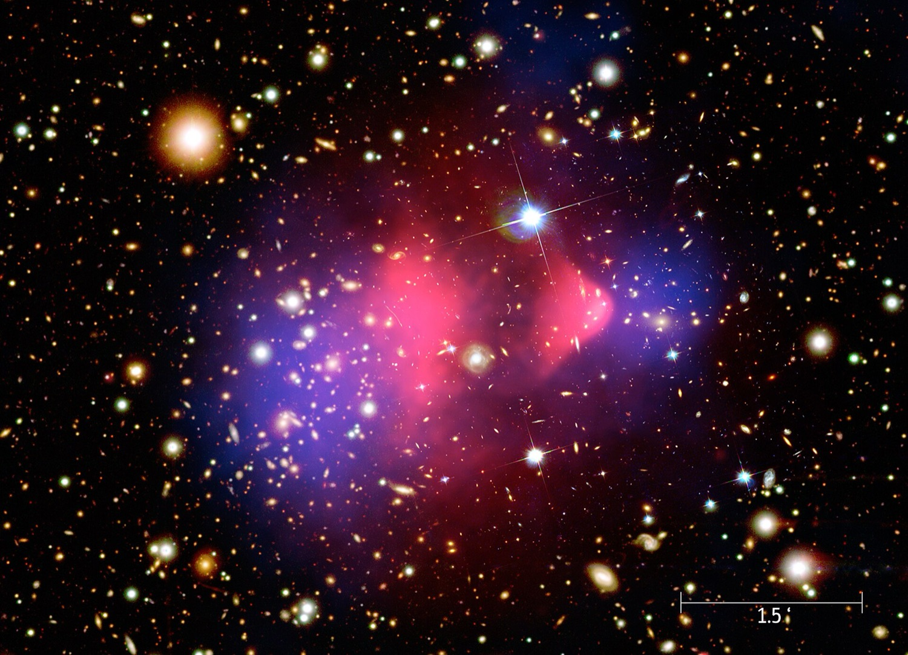
{kind=link}
No. 02 · Dark Matter
Most of the universe is invisible. We only know it's there by its pull.
Two clusters of galaxies just crashed through each other. The pink is everything we can actually see: all the stars, all the gas. The blue is where the weight is, mapped by how hard its gravity bends light on the way past. They don't line up. Invisible matter outweighs everything visible five to one, and in decades of hunting we have never caught a single particle of it.
"It is a strange and mysterious universe. But that's fun."Vera Rubin, who found the evidence
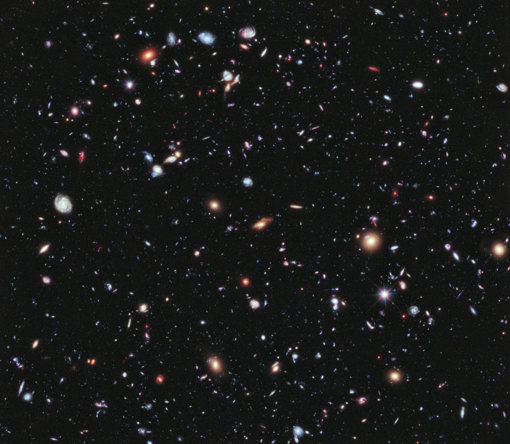
.png){kind=link}
No. 03 · Dark Energy
Every speck here is a galaxy. Something we can't name is blowing them apart.
A grain of sand held at arm's length would cover this entire photo. Inside that pinhole of sky sit thousands of galaxies, and they are all flying apart, faster every year, pushed by something that makes up 68% of the universe. When physicists calculated how strong the push should be, the answer came out wrong by a factor of 1 followed by 120 zeros. It has been called the worst prediction in the history of physics.
"...a glaring embarrassment."Sean Carroll, on the cosmological constant
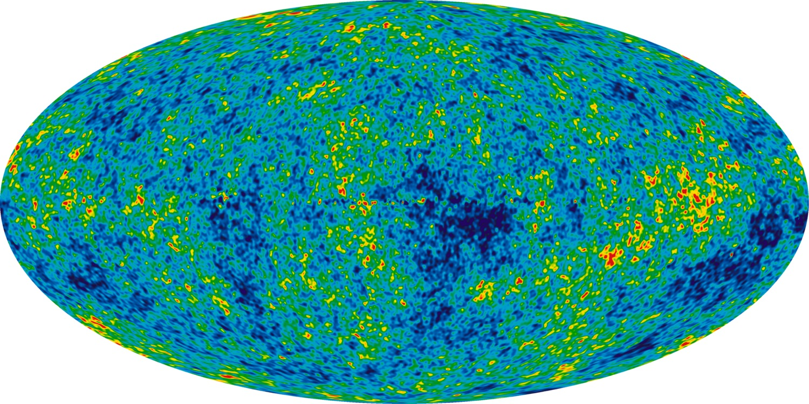
{kind=link}
No. 04 · The Big Bang
This is the oldest light there is. We can't tell you what came before it.
This is the entire sky, photographed in microwaves. The light here has been traveling for 13.8 billion years, released just 380,000 years after the beginning, and it is still arriving: on an old TV, about one percent of the static between channels was this exact glow. The theory describes everything that came after the beginning, with stunning precision. What banged, and why, it cannot say.
"In its original form, the Big Bang theory never was a theory of the bang."Alan Guth, MIT
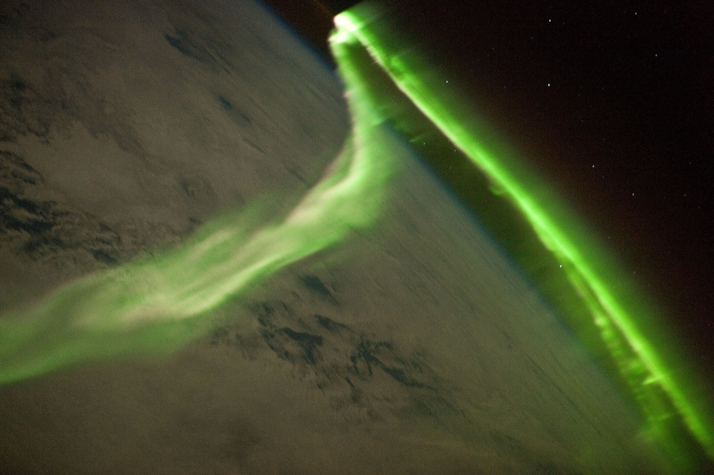
{kind=link}
No. 05 · Cosmic Rays
A single invisible particle hit the sky with the punch of a thrown baseball.
In 1991, a detector in Utah caught one subatomic particle carrying 48 joules, the energy of a pitched baseball packed into a single proton. That is tens of millions of times more energy than our biggest accelerator can give a particle. They named it the Oh-My-God particle and went looking for the cosmic engine that threw it. Nothing found in that part of the sky could have.
"That's the mystery of this, what the heck is going on?"John Matthews, Telescope Array
Everyday things, written to many decimals, working for reasons unknown.
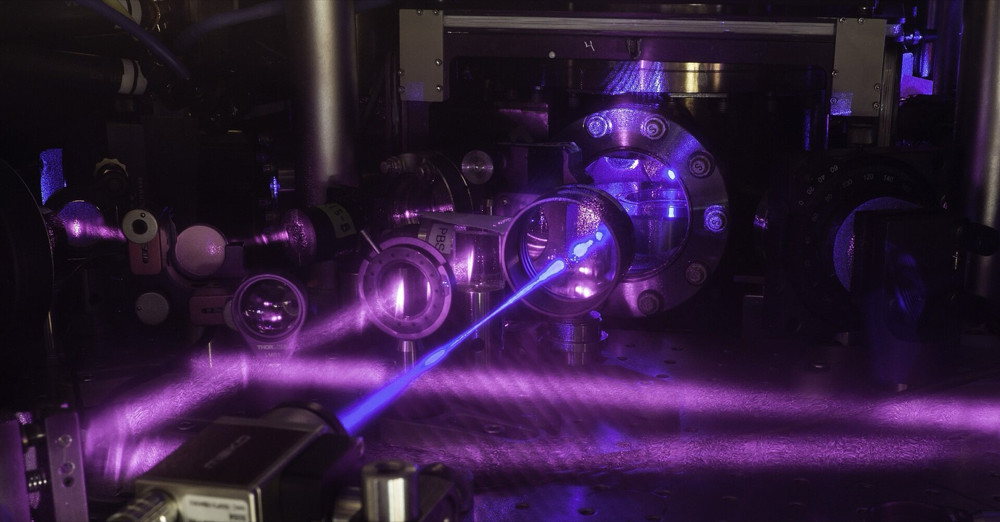
{kind=link}
No. 06 · Time
This clock won't lose a second in 30 billion years. We don't know what time is.
It would take more than twice the age of the universe for this machine to drift by one second, and that precision lets it watch time itself bend. Raise a clock like this a single millimeter and it ticks faster, because time runs quicker the farther you get from the Earth. Your head is aging faster than your feet, and our clocks can see it. Physics still cannot say what time actually is, why it flows in only one direction, or whether the future exists yet.
"The past is set in stone while the future can still be altered... all because of entropy."Sean Carroll, Scientific American
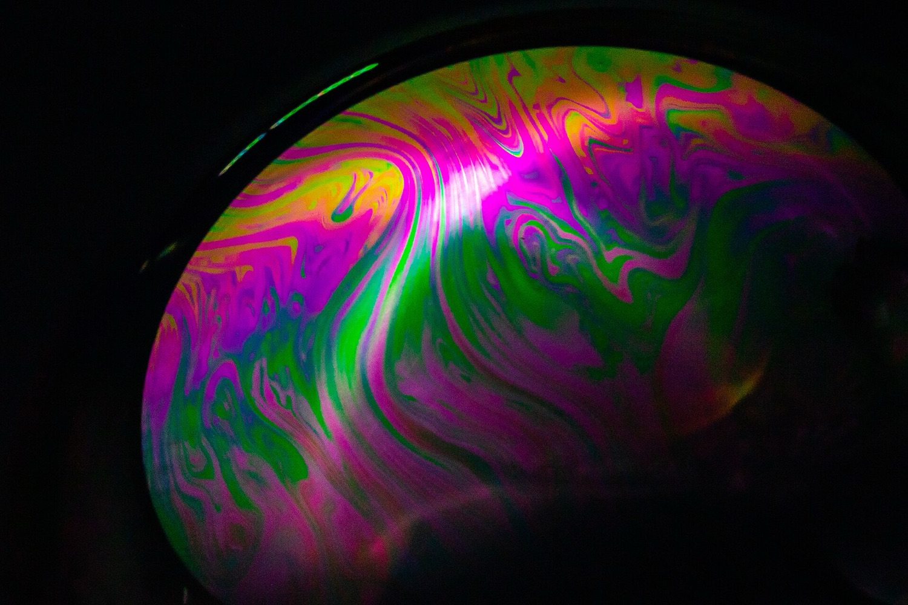
{kind=link}
No. 07 · Quantum Mechanics
Reality runs on rules nobody understands. Your phone depends on them.
These colours are light interfering with itself. Shrink the same wave down to a single electron and things get strange: the electron passes through two slits at once, unless you watch it, in which case it picks one. A century in, nobody can tell you why looking changes the answer. Meanwhile the theory predicts experiments to better than ten decimal places, the most accurate idea humans have ever had, and it runs every microchip on Earth.
"I think I can safely say that nobody understands quantum mechanics."Richard Feynman, 1965
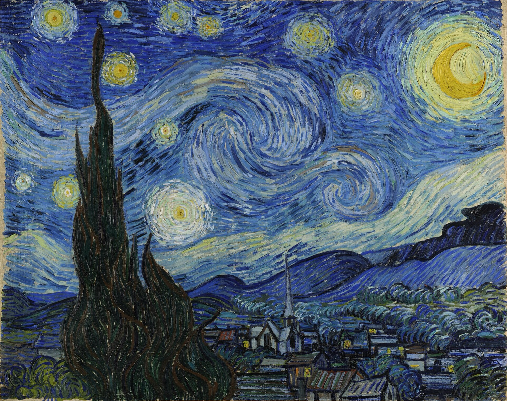
{kind=link}
No. 08 · Turbulence
Van Gogh painted the hardest unsolved problem in classical physics.
From an asylum window in 1889, Van Gogh filled this sky with swirls. When physicists later measured how its brightness churns from eddy to eddy, the statistics matched real turbulent flow. That flow is everywhere, in rivers, jet engines, and the cream in your coffee, and the math behind it has never been cracked. There is a million-dollar prize that asks only whether the governing equations always make sense. It has sat unclaimed since 2000.
"Nobody in physics has really been able to analyze it mathematically satisfactorily."Richard Feynman, Lectures on Physics
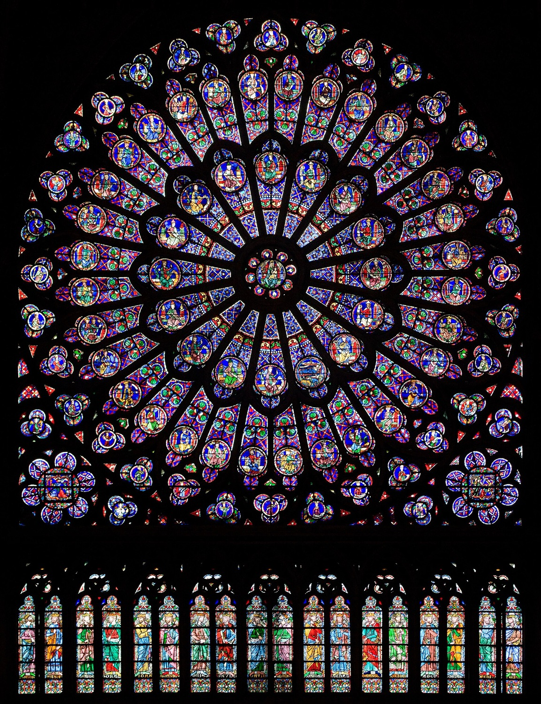
{kind=link}
No. 09 · Glass
This window is 800 years old. We still can't explain why glass is solid.
Zoom into any crystal and you find atoms standing in neat rows. Zoom into this medieval glass and you find them frozen mid-jumble, arranged like a liquid that simply stopped moving. Why a cooling liquid can lock up rigid without ever snapping into an orderly pattern is unsolved; a Nobel laureate called it the deepest problem in the physics of solids. The optical fiber carrying this page to you right now is the same mystery, stretched into a thread.
"The deepest and most interesting unsolved problem in solid state theory is probably... glass."Philip W. Anderson, Science, 1995
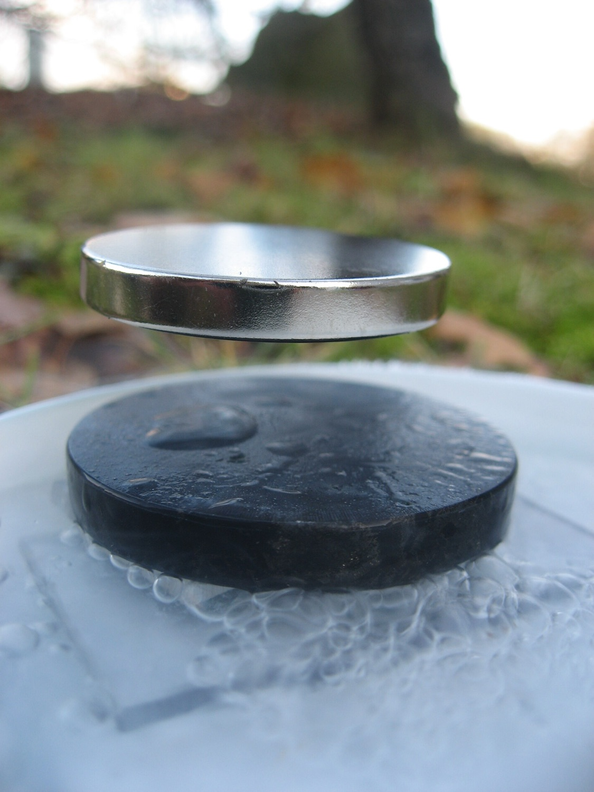
{kind=link}
No. 10 · Superconductivity
We've levitated magnets on a mystery for forty years.
That magnet is not falling. Chill certain materials enough and electricity flows through them with exactly zero resistance: start a current circling a loop of superconductor and it will still be going, undiminished, years later. Every MRI machine on Earth depends on this. Yet for the warmer superconductors discovered in 1986, after four decades and thousands of papers, there is still no agreed theory of why they work.
"In 30 years people will still say that the theory is not understood."A.-M. Tremblay, Physics Today
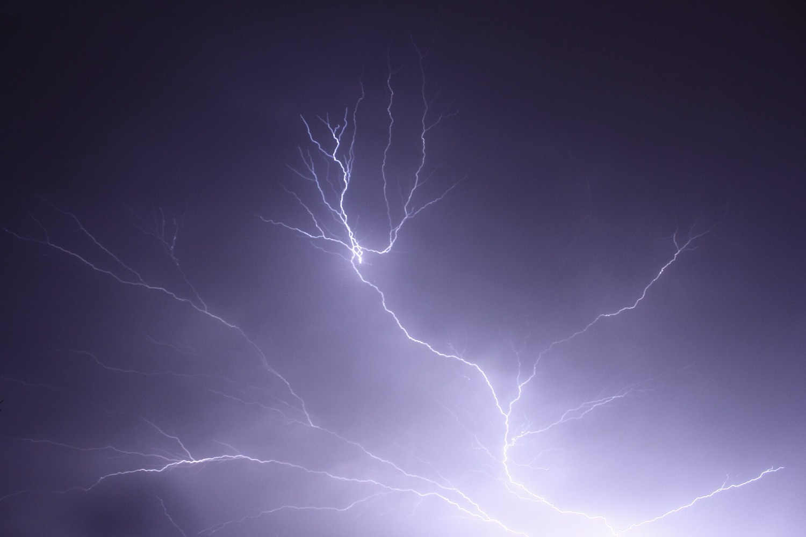
{kind=link}
No. 11 · Lightning
Lightning strikes three million times a day. We don't know how it starts.
We have flown balloons, rockets, and aircraft straight into thunderstorms to catch the moment a bolt is born. Here is the problem: the strongest electric fields ever measured inside a storm are about ten times too weak to spark anything. Every flash you have ever seen began in a way physics cannot yet supply. One leading suspect: cosmic rays from deep space, kicking off each bolt like a struck match.
"The most energetic process on the planet... and we have no idea how it works."Reported in Nautilus, 2024
We can read a mind and steer by a magnetic field, and explain neither.
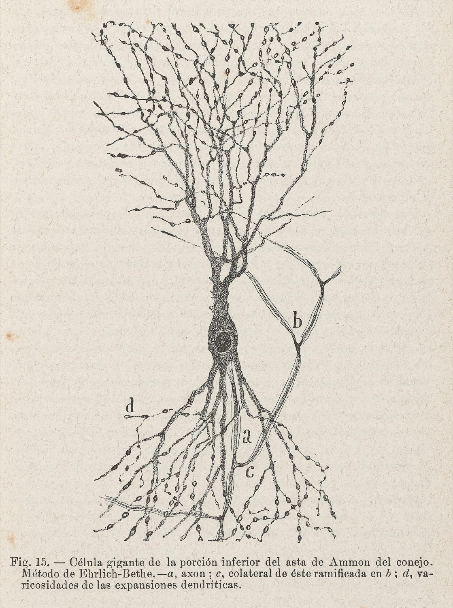
{kind=link}
No. 12 · Consciousness
We can read a picture out of your brain. We can't say why it feels like anything.
Every branch of this neuron was drawn by hand, around 1900, by a man squinting down a microscope. We have come a long way since: show someone a photograph, scan their brain, and software can now reconstruct roughly what they are seeing from the activity alone. Mind reading, in a lab, today. And neuroscience still cannot explain why any of that signaling feels like something from the inside. Reading the picture out turned out to be the easy part.
"There is a whir of information-processing, but there is also a subjective aspect."David Chalmers, on the hard problem, 1995
{kind=link}
No. 13 · Animal Compass
This bird navigates by Earth's magnetic field. We can't find its compass.
Put a robin in a windowless room in migration season and it still hops in the direction it should be flying. Reverse the magnetic field around it and the bird turns with it. Fifty years of experiments have put the sense itself beyond doubt. The leading explanation is the wild part: a quantum reaction inside a protein in the eye, which would mean the robin sees the field. No one has managed to find the sensor.
"The primary sensory mechanism behind this remarkable feat is still unclear."Hore & Mouritsen, Annual Review of Biophysics, 2016
No. 14 · The Placebo Effect
Sugar pills work even when you know they're sugar.
The placebo effect is so dependable that every new drug on Earth must prove it can beat it. Researchers eventually tried being honest. They told patients to their face: these pills are sugar, there is nothing in them. The patients took them anyway and still got better, 59% versus 35% in one trial. No deception required. Why the truth doesn't break the spell, no one knows.
"The psychological mechanisms underlying... open label placebo are unclear."Kaptchuk & Miller, BMJ, 2018
Where proof itself runs out, and the machine that found these images.
{kind=link}
No. 15 · The Bicycle
We've ridden bicycles for 200 years without knowing why they balance.
Push a riderless bicycle up to speed and it balances itself: knock it sideways and it steers into the wobble and recovers, no rider required. For a century the textbooks gave two reasons, the gyroscope of the spinning wheels and the caster-like trail of the front fork. In 2011 engineers built a bicycle that canceled both effects. It balanced anyway, and no simple explanation has replaced the broken ones.
"We show that neither effect is necessary for self-stability."Kooijman et al., Science, 2011
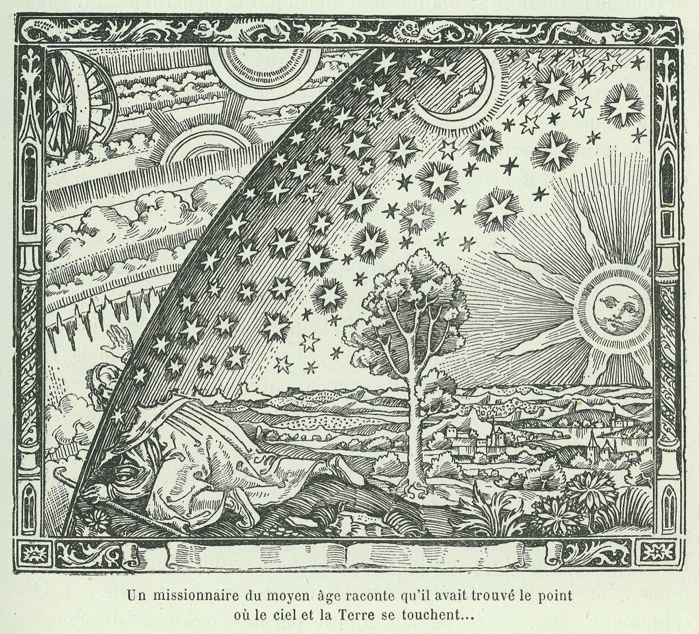
{kind=link}
No. 16 · Reality
Nothing you can ever observe can prove this is real.
This 1888 engraving shows a traveler poking his head through the edge of the sky to see the machinery behind the world. Four centuries of philosophy have not solved his problem: every test you could ever run on reality arrives through your senses, and your senses are the very thing in question. Descartes imagined a deceiving demon. We say simulation. No possible experiment can tell the difference.
"I shall suppose that some malicious, powerful, cunning demon has done all he can to deceive me."René Descartes, Meditations, 1641
{kind=link}
No. 17 · The Limits of Proof
Some true things can never be proven. That itself was proven.
Math was supposed to be the one place where every true thing could, eventually, be proven. In 1931 a 25-year-old named Kurt Gödel ended that, using math itself. He built a statement that says, in effect, "this statement can never be proven," out of nothing but arithmetic. If math proves it, math is broken. If it can't, it is a truth beyond proof. Either way certainty has a hole in it, and Gödel marked exactly where.
Any rich-enough consistent system holds statements "which can neither be proved nor disproved" within it.on Gödel's incompleteness theorems
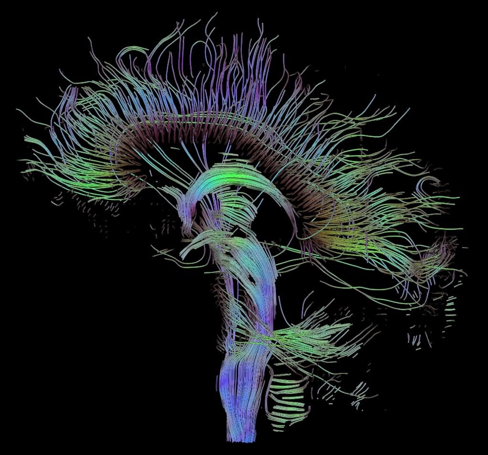
{kind=link}
No. 18 · The Machine
We grew a mind that works, and we can't explain how.
Nobody wrote the AI that is reshaping the world. We grew it: show a neural network enough examples and it wires itself, and no one, not even the people who train them, can fully explain why that works or what is happening inside the finished network. One of them predicted the shapes of proteins well enough to win a Nobel Prize. One of them gathered the images on this page and helped write it. The newest thing we have ever made joins gravity on this list: used every day, explained by no one.
"No existing theory can guarantee that... gradient descent... can converge to the global minimum."Simon Du, Quanta, 2021
So drop your phone one more time, and watch it fall. You are looking at the most reliable, most precisely measured, least understood fact in all of science, and you have just walked past seventeen of its cousins. The edge of what we know is not some far frontier. It runs right through the middle of an ordinary day, through every clock and cathedral window and falling thing.
None of this means any of it is fake. The phenomena are as solid as facts get. It is the why, and the final proof, that runs out, and that running-out is exactly where every interesting question still lives.
A note on honesty: "we can't explain it" here means there is no scientific consensus, not that there are no ideas. Most of these have several competing theories and active research; a few, like the limits of proof or whether reality is real, are matters of logic no experiment can close. Every claim links to its source, and every quote is verbatim. Where a phenomenon is genuinely contested, the wording leans toward "no agreed explanation" rather than "no idea at all."
Image credits
- Gravity: black hole M87*, Event Horizon Telescope Collaboration, CC BY 4.0
- Dark matter: Bullet Cluster, NASA / CXC / STScI, public domain
- Dark energy: Hubble eXtreme Deep Field, NASA / ESA, public domain
- Big Bang: cosmic microwave background, NASA / WMAP Science Team, public domain
- Cosmic rays: aurora from the ISS, NASA, public domain
- Time: strontium atomic clock, G.E. Marti / JILA (NIST), public domain
- Quantum mechanics: soap-film interference, Dietmar Rabich, CC BY-SA 4.0
- Turbulence: The Starry Night, Vincent van Gogh (1889), public domain
- Glass: Notre-Dame north rose window, Julie Anne Workman, CC BY-SA 3.0
- Superconductivity: Meissner effect, Bobroff & Bouquet, LPS Orsay, CC BY-SA 3.0
- Lightning: lightning over Albury, Thennicke, CC BY-SA 4.0
- Consciousness: neuron, Santiago Ramón y Cajal (1904), Wellcome Collection, CC BY 4.0
- Animal compass: European robin, Wikimedia Commons, CC BY-SA 4.0
- Placebo: pills, Hal Gatewood / Unsplash
- Bicycle: antique high-wheel, Agence Meurisse / BnF, public domain
- Reality: Flammarion engraving (1888), public domain
- Limits of proof: ouroboros, Lucas Jennis (1625), public domain
- The machine: brain tractography, Thomas Schultz, CC BY-SA 3.0